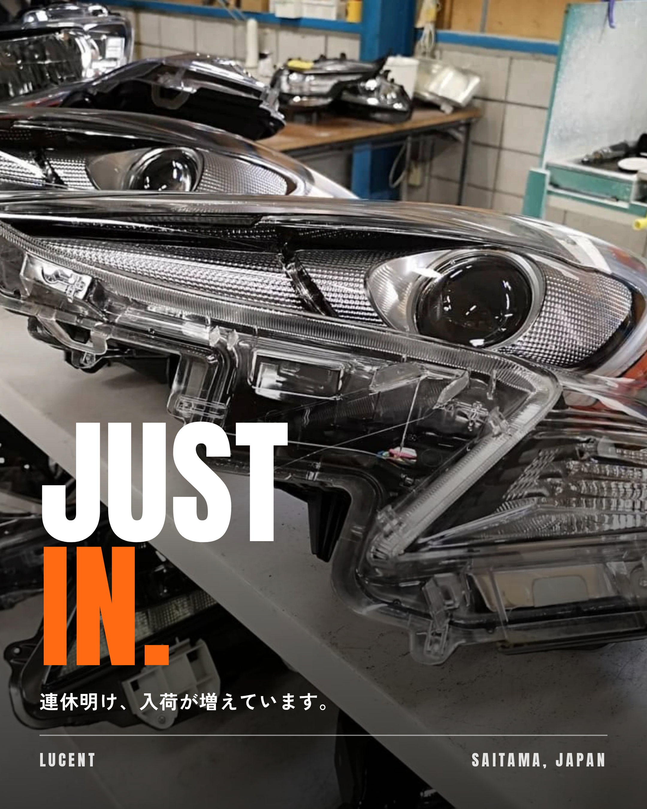
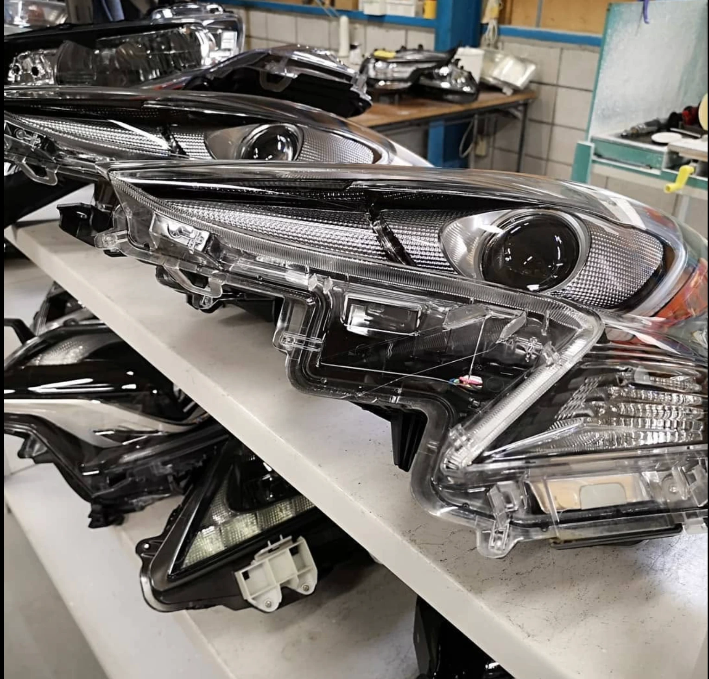

MADE WITH ONE LINE
01 / 05
店のインスタ
投稿を、
一言
頼んで
作りました。
本業（車の中古部品屋）の
アカウントの投稿です

@LINE_AI_OFFICE
SWIPE
MADE WITH ONE LINE
02 / 05

シルバーウイークも終わり
順調に部品の入荷も増えて
登録作業しております！
買取依頼もいつでもOKです
みたいな投稿作って！
頼んだのは、
この一文
。
あとは写真1枚だけ。
@LINE_AI_OFFICE
1 MESSAGE + 1 PHOTO
MADE WITH ONE LINE
03 / 05
あとはAI社員が
手分け
ライター
文章を書く
SNS担当・
アナリスト
一回読んで分かるか確認
デザイナー
写真に文字を入れて画像に
@LINE_AI_OFFICE
AI STAFF
MADE WITH ONE LINE
04 / 05
できたのが、これ。
「もう少し長くしてほしい」と一言送ったら、
長くした版が届きました。
@LINE_AI_OFFICE
LUCENT / SAITAMA
MADE WITH ONE LINE
05 / 05
スマホで頼むだけの
AIチーム、
事業主向けに
作っています
9
つの職種がそろったチーム。
詳しくはプロフィールのリンクから
@LINE_AI_OFFICE
AI OFFICE